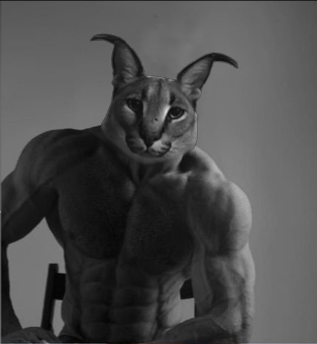

Базированный Шлёпа Гигачад.
Кто такой Базированный Шлёпа Гигачад?
Большой Шлёпа Гигачад, также известен как просто Шлёпа или Большой русский кот, настоящие имя Гоша. Самый базированный кот. Всегда прав, потому выигрывает любой спор. Посещает спортзал 14 раз в неделю. Воистину сильнейший из ныне живущих существ. Любитель курицы, пельменей и мятных пряников. Получил статус военного преступника в войне со своим заклятым врагом, сфинксом Бингусом. Ниже приведены характеристики Шлепы:
- Базированность - 1489
- Сила - 1000
- Интеллект - 1000
- Выносливость - 1000
- Ловкость - 1000
Определение мема.
Фраза «базированный Шлёпа Гигачад» появилась в соцсетях в сентябре 2021 года. Она образовалась благодаря совмещению трёх слов, ставших мемами: «базированный» или «базовый», прозвища абстрактного самоуверенного молодого человека, которого называют Гигачад, и клички каракала, известного как большой Шлёпа. Прилагательное стало мемом благодаря популярной фразе «это база», которая в англоязычном сегменте интернета символизирует поведение человека, который не зависит от чужого мнения, или одобрение. Впрочем, в рунете словосочетание приобрело иной смысл благодаря псевдоученому Юрию Рыбникову.После того как он использовал выражение «это база», в рунете оно стало символизировать нечто слегка сумасшедшее и неаргументированное. Таким образом, можно расшифровать фразу «базированный Гигачад большой Шлёпа» как обозначение самоуверенного человека, который высказывает ничем не подтверждённое непопулярное мнение, а кличка каракала придаёт налёт абсурда.
Это не военное преступление если тебе было весело.- Большой Шлёпа